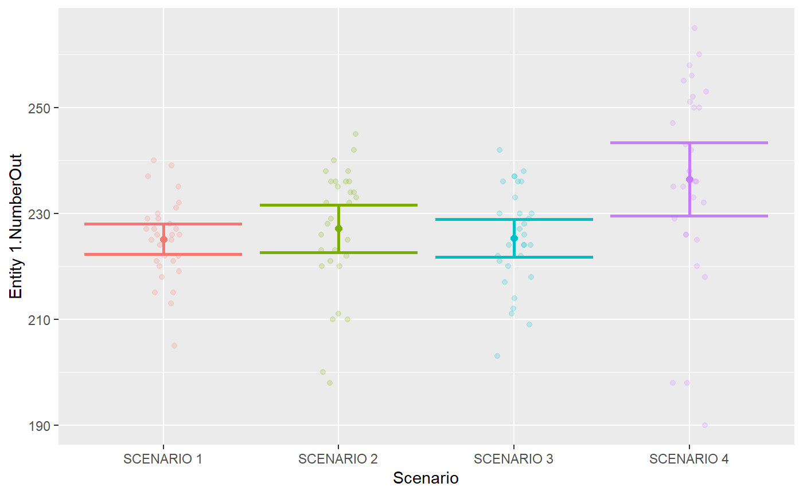
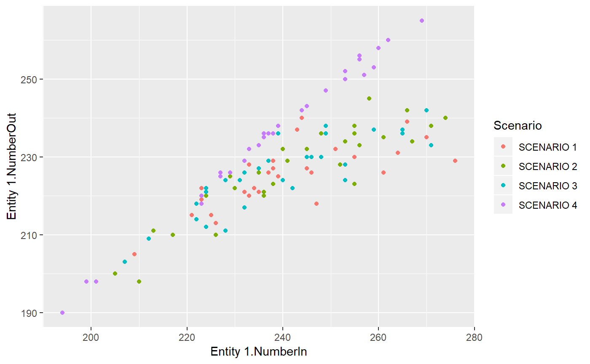

vignettes/arena2r-vignette.Rmd
arena2r-vignette.RmdThis is a basic example which shows you how to get your Arena results quickly into R. The basic idea is to run different scenarios and save each of them to a separate csv file. (Yes, you could use Process Analyzer (PAN) to run all scenarios, but to my knowledge, there’s no way to get your data out of the PAN easily).
Follow these steps to get Arena simulation results to R:
If you’re not familiar to R, you can run this command on R Console and use the example app.
After running this command, the app screen will pop up. You can upload your csv files and play around with the Confidence Interval and Scatter Plots.
# Load the library:
library(arena2r)
# Define the path to your folder with Arena csv files. In my case, it's here:
my_path = system.file("extdata", package = "arena2r")
# Then, get a tidy results data.frame out of your files!
results = arena2r::get_simulation_results(my_path)You can also play around with the arena_results dataset included in the package. To use it, follow these steps:
library(arena2r)
# Load the example dataset:
data("arena_results")
# Let's call it results
results = arena_results
knitr::kable(head(results))| Scenario | Statistic | Replication | Value |
|---|---|---|---|
| SCENARIO 1 | Entity 1.NumberIn | 1 | 233 |
| SCENARIO 1 | Entity 1.NumberIn | 2 | 247 |
| SCENARIO 1 | Entity 1.NumberIn | 3 | 239 |
| SCENARIO 1 | Entity 1.NumberIn | 4 | 261 |
| SCENARIO 1 | Entity 1.NumberIn | 5 | 264 |
| SCENARIO 1 | Entity 1.NumberIn | 6 | 266 |
After these steps, now you have a tidy data.frame with your results. Let’s get into possible visualizations. Usually, you’ll be interested in the mean confidence interval for some response variable, across scenarios.
# Plot a Statistic confidence interval across scenarios for a response variable.
arena2r::plot_confint(sim_results = results, response_variable = "Entity 1.NumberOut")
Now let’s explore the relationship between two variables, across scenarios and replications:
# Now let's plot analyse the relationship between two variables:
arena2r::plot_scatter(sim_results = results, x_variable = "Entity 1.NumberIn", y_variable = "Entity 1.NumberOut")
Finally, let’s summarise every statistic across all scenarios.
statistics_summary = arena2r::get_statistics_summary(sim_results = results, confidence = 0.95)
knitr::kable(head(statistics_summary[,1:6]))| Scenario | Statistic | Mean | SD | Min | Max |
|---|---|---|---|---|---|
| SCENARIO 1 | Entity 1.NumberIn | 241.03333 | 15.773140 | 209.000000 | 276.0000 |
| SCENARIO 1 | Entity 1.NumberOut | 225.13333 | 7.735870 | 205.000000 | 240.0000 |
| SCENARIO 1 | Entity 1.NVATime | 0.00000 | 0.000000 | 0.000000 | 0.0000 |
| SCENARIO 1 | Entity 1.OtherTime | 0.00000 | 0.000000 | 0.000000 | 0.0000 |
| SCENARIO 1 | Entity 1.TotalTime | 11.15272 | 4.850762 | 5.161059 | 25.2438 |
| SCENARIO 1 | Entity 1.TranTime | 0.00000 | 0.000000 | 0.000000 | 0.0000 |
I hope you enjoyed the package.